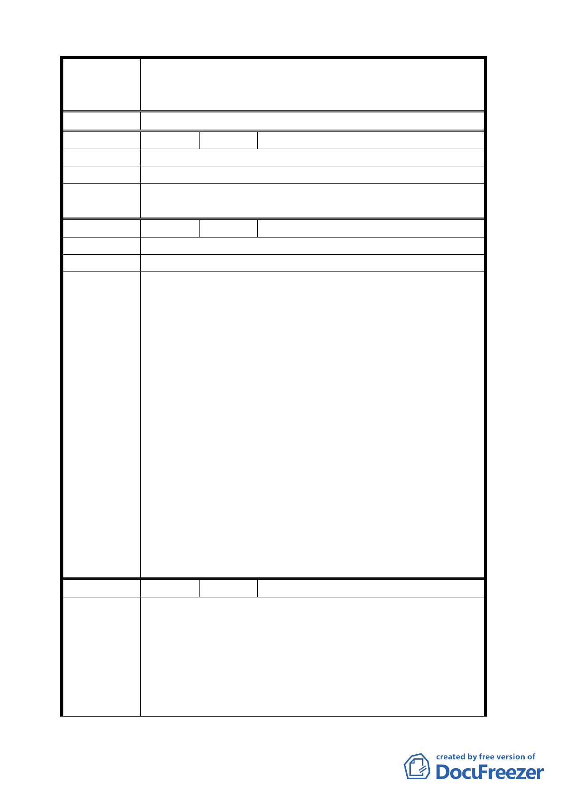

案名
決議
編號
陳情理由
建議辦法
委員會
決議
編號
陳情理由
建議辦法
委員會
決議
編號
陳情理由
變更臺北市華光社區暨週邊地區住宅區、電信用地、郵
政用地及變電所用地土地為商業區、數位科技專用區及
金融服務專用區主要計畫案
15 陳情人 潘聰林
請市政府主導以屋換屋辦法解決。
同編號 2 決議。
16 陳情人 陳玉英
一切以市府主導安置，我等一切配合辦理。
1.本案除下列幾項應作修正外，餘依市府本次提會審議
資料內容通過。
（1）計畫區北側計畫道路路寬並不一致（西段 20 公尺、
東段 12.74 公尺），本案配合變更住宅區為道路用
地，使北側道路路寬統一達 20 公尺，以順平路型。
（2）計畫區西北側原擬由住宅區變更為商業區區域，
分區名稱一併調整為「特定專用區」。
（3）同意市府為整體環境景觀考量，將變電所用地變
更為特定專用區，惟未來該特定專用區內仍應允許
變電所設施使用，以維持地區供電需求。
（4）本案涉及土地使用分區及用地變更，依規定應辦
理回饋，相關文字請於主要計畫書內載明，至於詳
細回饋內容，另於細部計畫再作規範。
（5）計畫案名請配合審查決議修正。
2.有關本計畫特定專用區未來使用項目，同意納入住宅
使用。另外，有關拆遷安置之民眾陳情及延續中正紀
念堂至永康商圈都市活動之委員建議，建請開發單位
納入後續再開發計畫擬訂考量。
17 陳情人 呂學偉
1.本人係重度殘障，身無恆產，端賴此屋棲身。若市府
配合行政院強行剝奪房屋，本人及家人必定死守家
園，把命交給市府及行政院。
2.請市府為住戶把關，使行政院的都市更新案落實於老
百姓的利多，達成都市更新的精義，造福弱勢百姓。
3.請市政府先行考量本計畫區內住戶安置問題及補償事
宜後，重新計畫本案。
- 13 -